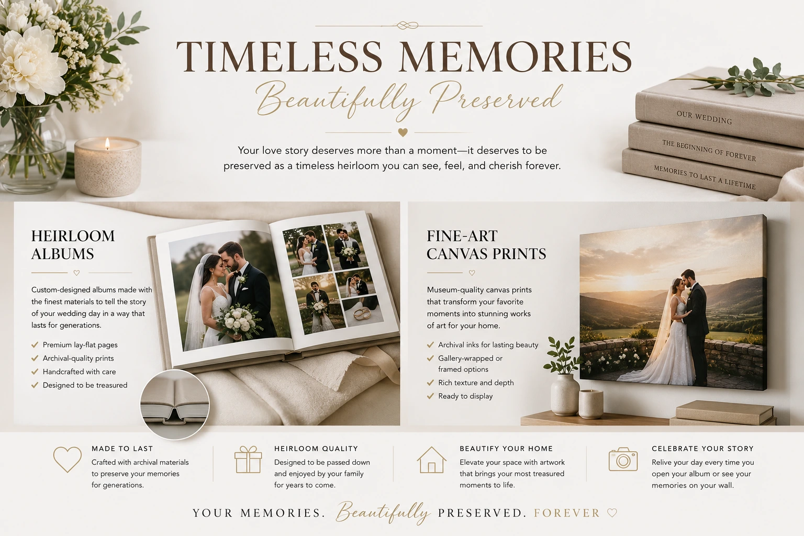
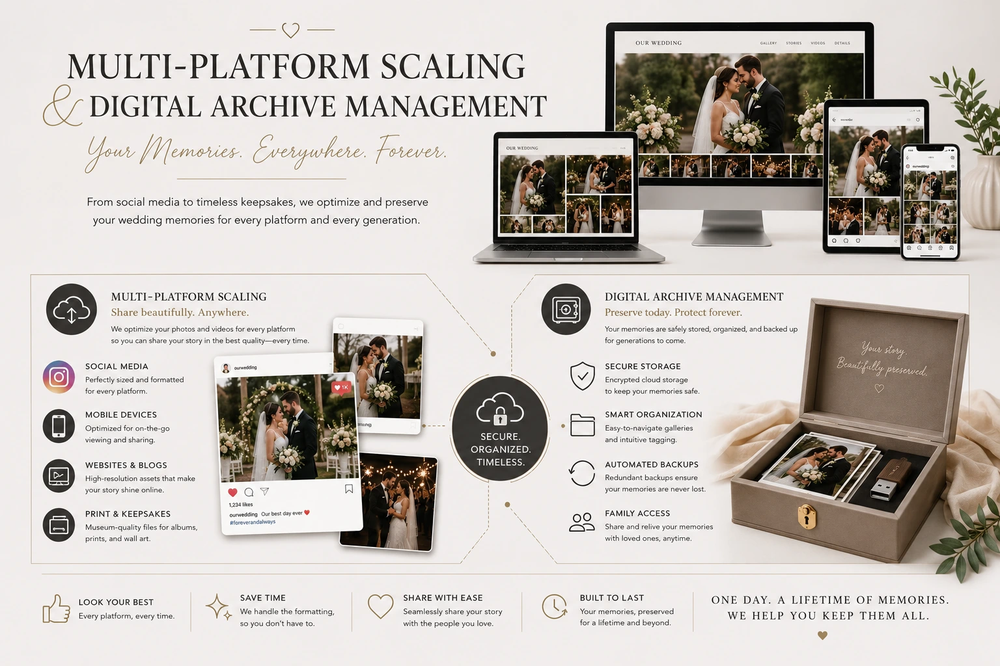

Creative Ways to Use Your Wedding Media Assets for Long-Term Memories
Your Wedding Photographs and Videos Are Not a Delivery — They Are a Lifetime Asset
Most couples invest significantly in their photography and videography packages for their wedding day — and then receive the delivered files, post a selection on Instagram, and let the rest sit in a folder on their phone or a Google Drive link they occasionally remember exists. The wedding film is watched once on the laptop the week it arrives, shared with a few family members on WhatsApp, and then quietly archived alongside documents and tax filings.
This is not a failure of sentiment. It is a failure of post-wedding media design — the intentional, creative process of transforming wedding photography and video assets into the physical objects, digital formats, and ongoing media that keep the memory alive, present, and shareable across years and generations.
Your wedding media is one of the most emotionally significant creative assets you will ever own. Knowing how to use it — through custom wedding heirloom albums, fine-art canvas printing, short-form anniversary trailers, multi-platform wedding content scaling, and proper systems for managing digital wedding archives — is the difference between a memory that fades into a folder and one that grows richer and more present with every passing year.
Custom Wedding Heirloom Albums: The Physical Memory That Outlasts Every Screen
In an era of screens and cloud storage, a physical album seems almost anachronistic — until you hold one. A professionally designed custom wedding heirloom album is the most durable and emotionally resonant form a wedding memory can take. It does not require a password, a subscription, or a compatible device. It sits on a shelf and waits to be opened — and when it is opened, by the couple or by children or grandchildren decades later, it communicates the complete emotional story of the wedding day with a physical presence that no screen can replicate.
A custom wedding heirloom album is distinct from a photo book ordered through a print-on-demand app. It is a professional design product — curated, sequenced, and laid out by a designer who understands how to tell a visual story across a physical format — printed on archival paper with museum-quality inks that resist fading for decades, and bound in materials chosen for their longevity and tactile quality.
The design decisions that determine an heirloom album's long-term value:
- Image curation and sequence. A wedding day generates hundreds or thousands of photographs. The heirloom album contains sixty to one hundred and twenty — the images that together tell the complete emotional arc of the day, from preparation through ceremony through reception, selected not for technical perfection alone but for the story they tell in sequence. The curation is the craft: it requires the same editorial judgment that a book editor applies to a manuscript, selecting what stays and what leaves in service of the narrative whole.
- Layout and visual rhythm. The best heirloom album layouts balance full-spread hero images — the photographs that demand to be seen large — with smaller detail sequences that document the texture and intimacy of the day. The visual rhythm of the layout — when to give an image the full spread, when to cluster a series of moments, when to let a page breathe with white space — is a design discipline that determines whether the album feels like a museum-quality art object or a scrapbook.
- Print and binding quality. Archival standards matter for an object intended to last generations. Lay-flat binding allows double-page spreads to open fully without a gutter shadow obscuring the centre of an image. Archival paper and UV-resistant inks ensure colour fidelity decades from now. Cover materials — genuine leather, linen, or fine art paper — communicate the object's significance before it is opened.
- Parent and family editions. A standard part of post-wedding media design for Indian weddings is the production of smaller parent albums — companion editions of the heirloom album, with a curated selection of the key family moments, designed as gifts for both sets of parents. These become the physical memory object in the family homes where the wedding story is most frequently revisited.

Fine-Art Canvas Printing: The Wedding Photograph as Living Décor
The photographs from a professionally shot wedding are, in many cases, the most artistically significant images a couple will ever own. Fine-art canvas printing is the production process that takes these images from screen resolution to the physical scale at which they communicate their full visual and emotional impact — on the walls of a home, as the visual anchor of a room, as the first thing a visitor sees and feels when they enter a space.
Fine-art canvas printing for wedding photographs is not the same as ordering a canvas online. It is a professional print production process that begins with the right image selection and file preparation, and ends with an archival-quality physical object built to retain its colour, detail, and structural integrity for decades.
The creative decisions in a fine-art wedding print programme:
- Image selection for large-format printing. Not every wedding photograph translates to large-format print. The images that work best at canvas scale are those with strong compositional structure, emotional depth, and sufficient resolution to support the chosen print dimensions. A professional print consultation — with the photographer or a post-wedding media specialist — identifies which images from the wedding have the visual qualities that large-format printing amplifies rather than exposes.
- Print format and sizing for the space. A single large canvas — 40 by 60 inches or larger — makes a different statement from a gallery wall arrangement of five or seven smaller prints. The choice depends on the wall, the room, and the visual intention: a single hero image communicates differently from a curated narrative sequence. Post-wedding media design that includes wall art planning considers the couple's home environment and creates a print programme that works with the space rather than against it.
- Print medium selection. Fine-art cotton rag paper produces a matte, painterly finish that suits portrait and intimate ceremony photography. Canvas produces a textured, gallery aesthetic suited to landscape and environmental shots. Metallic fine-art paper produces luminous highlights suited to golden-hour and backlit portraits. Each medium communicates differently — the selection should be guided by the image's content and the home's aesthetic.
- Black and white conversions for timeless wall art. A colour wedding photograph converted to a professionally crafted black and white print — with deliberate tonal decisions rather than a filter applied — often communicates the emotional content of the image more powerfully than the colour original, and ages more gracefully as interior design aesthetics evolve over decades.
Short-Form Anniversary Trailers: Giving the Wedding Film a Second Life
The full wedding film — two to four hours of edited footage, or even a 20 to 30 minute cinematic cut — is watched with full attention once, perhaps twice, in the weeks after the wedding. It is not a format designed for annual revisiting or social sharing. A short-form anniversary trailer is the format that is.
A short-form anniversary trailer is a one to two minute edit produced from the original wedding footage — a compressed, emotionally resonant distillation of the day's most significant moments, re-edited with fresh eyes and sometimes a new music track, designed specifically to be shared on the couple's first anniversary, their fifth, their tenth. It is the format that brings the wedding film back into the couple's present life and into the social feeds of the people who were part of the day.
Why short-form anniversary trailers compound in value over time:
- The emotional distance of time improves them. A wedding film watched in the week of delivery is watched with the memory of the day still vivid — the details, the exhaustion, the logistics, the moments that were missed. A short-form anniversary trailer watched on the first or fifth anniversary is watched with the emotional distance that allows the images to communicate purely, without the noise of recent memory. The same footage feels more moving, not less, with time.
- They become family documents as time passes. An anniversary trailer shared on the tenth wedding anniversary includes people who may no longer be present — grandparents, family members, friends whose lives have changed. The footage's documentary value increases with every year that passes, transforming from a wedding memory into a family historical record.
- Social sharing amplifies the original investment. A beautifully edited one-minute anniversary trailer shared on Instagram on a wedding anniversary earns genuine engagement — from the couple's community, from people who attended the wedding, from people who did not. Every share extends the original photography and videography investment's social reach years beyond the wedding date.
Multi-Platform Wedding Content Scaling: One Wedding, Many Formats
Multi-platform wedding content scaling is the strategic approach to taking the complete library of wedding photography and video and distributing it intelligently across the digital platforms where the couple, their families, and their community live — in formats appropriate to each platform, at the right time, for the right audience.
Most couples share a selection of wedding photographs on Instagram in the weeks after the wedding and consider the social media chapter closed. Multi-platform wedding content scaling understands that the wedding media library is a content asset that can work across platforms and across time — if it is formatted and deployed intentionally.
Instagram and Facebook
The wedding highlight reel as a Reel on the day of the anniversary. A curated set of ceremony images as a carousel post. Behind-the-scenes preparation photographs as Stories. A styled detail flat-lay as a standalone post. Each piece of the wedding library has a platform-native format in which it earns maximum engagement — multi-platform wedding content scaling identifies and uses each one.
YouTube
The full wedding film published as an unlisted or public YouTube video becomes a permanent, shareable link that does not expire and does not depend on a third-party file-sharing service. It is the format to send to family members who want to watch on a television screen — and it is indexable by search engines, giving the wedding film a discoverability that a Google Drive link does not have.
WhatsApp and Family Groups
Curated family-specific edits — the moments that matter most to each set of parents and extended family — shared in family WhatsApp groups on anniversaries, birthdays, and family occasions. A two-minute compilation of grandmother's moments from the wedding, shared with the family on her birthday, is a post-wedding media use that costs almost nothing to produce and earns an emotional response that no purchased gift can match.
Private Family Platforms
For couples who want a permanent, organised, private home for their wedding media beyond a commercial cloud service, a private family media platform — a self-hosted gallery, a curated digital family archive — provides a long-term home for the complete library that is accessible to family members across generations without depending on the continued existence of a commercial platform.

Managing Digital Wedding Archives: Preserving the Asset for Generations
Managing digital wedding archives is the least glamorous and most important aspect of long-term wedding memory management. Hard drives fail. Cloud services change their pricing or shut down. Phone storage gets cleared. Wedding photographs and videos stored on a single device or a single platform are not preserved — they are at risk.
A professional approach to managing digital wedding archives applies the same principles that museums and film archives use for preserving irreplaceable visual assets:
- The 3-2-1 backup rule. Three copies of every file, on two different storage types, with one copy stored off-site. For a wedding media archive, this means: a primary external hard drive at home, a second external drive at a family member's home or office, and a cloud backup on a dedicated photo and video preservation platform. All three must be maintained and verified annually — a backup that has not been checked is not a backup.
- File organisation structure. A clear, consistent folder hierarchy that labels files by date, event segment, and file type ensures that the archive remains navigable as it grows and as the couple's own memory of the day's sequence fades over years. A structure such as YYYY-MM-DD / Event-Name / Segment / File-Type takes minutes to establish and saves hours of searching decades later.
- Format longevity planning. JPEG and MP4 are the formats most likely to remain readable by future software — proprietary RAW formats from specific camera manufacturers are more at risk of becoming unreadable as software evolves. If the photographer delivers RAW files, maintain both the original RAW files and a high-quality JPEG or TIFF export as the primary accessible archive. For video, a high-quality MP4 export at the highest available resolution is the most future-proof delivery format.
- Annual archive review. Once each year — ideally on the wedding anniversary — open the archive, verify that all backups are intact, check that cloud storage subscriptions are active, and transfer any files that have accumulated on phone cameras or social media downloads back into the structured archive. The five minutes this takes annually prevents the decade of loss that a single hard drive failure can cause.
- Next-generation handover planning. For an archive intended to outlast its original owners, a brief written document — stored with the archive — that explains the folder structure, the storage locations, and the file formats ensures that children or family members who inherit the archive can navigate and use it without the original couple's knowledge to guide them.
How to Choose Photography and Videography Packages That Support Long-Term Use
When couples search for the top wedding photographers near me, the conversation typically focuses on style, availability, and price. The questions that determine long-term value are rarely asked — and they should be the first questions in every photographer consultation.
- What file formats and resolutions are delivered? High-resolution JPEG or TIFF for photographs. High-definition or 4K MP4 for video. These are the minimum standards for files that will support fine-art canvas printing at large format and video editing for future short-form anniversary trailers.
- Do the delivered files include print release rights? Some photographers deliver files that can only be used for personal digital sharing — not for commercial printing. For heirloom album production and fine-art canvas printing, full print release rights are essential. Confirm this explicitly before booking.
- What is the delivery timeline and file access structure? Files delivered via a link that expires in 30 days are not a long-term delivery. Confirm that the delivery method provides permanent or long-term access, or that the files can be downloaded completely and stored in the couple's own archive structure.
- Does the package include any post-wedding media design services? The best photography and videography packages offered by the top wedding photographers near me include post-wedding design options — heirloom album design, anniversary trailer editing, print consultation — as part of the package or as clearly priced add-ons. Understanding what is available before the wedding allows the couple to plan their post-wedding media investment alongside the shoot itself.
The Post-Wedding Media Design Timeline
Post-wedding media design is most effective when it is planned as a phased process rather than a single project attempted immediately after the wedding:
- Weeks one to four after the wedding: Receive all delivered files. Establish the archive structure. Create all three backup copies. Share the social media selection. Do not rush the heirloom album or print decisions — the best curation happens with emotional distance, not in the immediate post-wedding period when every image feels equally important.
- Months two to four: Begin the heirloom album design process — either with the photographer's post-wedding design services or with a specialist post-wedding media designer. Select the wall art images and commission the fine-art canvas printing. Order parent albums.
- The first anniversary: Commission the first short-form anniversary trailer from the original wedding footage. Share it across the couple's social platforms and with family. Review the archive to confirm all backups remain intact.
- Every subsequent anniversary: Share the anniversary trailer or commission a new cut from a different section of the footage. Add any new family photographs taken at anniversary celebrations to the archive. Consider additional print pieces as the home and family grow.
Conclusion
The investment in photography and videography packages for a wedding is made in anticipation of memories that will last a lifetime. But memories do not last automatically — they last because they are actively preserved, creatively expressed, and regularly revisited. Custom wedding heirloom albums, fine-art canvas printing, short-form anniversary trailers, multi-platform wedding content scaling, and thoughtful managing of digital wedding archives are the creative and practical disciplines that transform a delivery of files into a lifetime of living memory.
The top wedding photographers near me are not just the ones who capture the day beautifully — they are the ones who understand that the shoot is the beginning of the memory, not the end of it, and whose post-wedding media design services give couples the tools to build that memory into something that grows more valuable with every year that passes.
At The PhD Ads, we provide complete photography and videography packages for weddings across Tamil Nadu — from the shoot through the heirloom album, the fine-art prints, and the anniversary trailers — because we believe the wedding day is worth preserving in every format it deserves.
Key Topics
Turn Your Wedding Media Into a Lifetime of Memories
At The PhD Ads, we offer complete photography and videography packages for weddings across Tamil Nadu — including post-wedding media design, custom heirloom albums, fine-art canvas printing, and anniversary trailer editing, so your wedding memory grows richer with every passing year.
Email: team@e2o.in